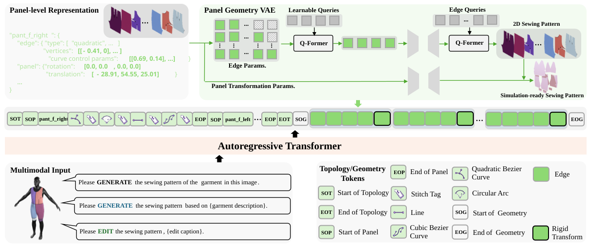
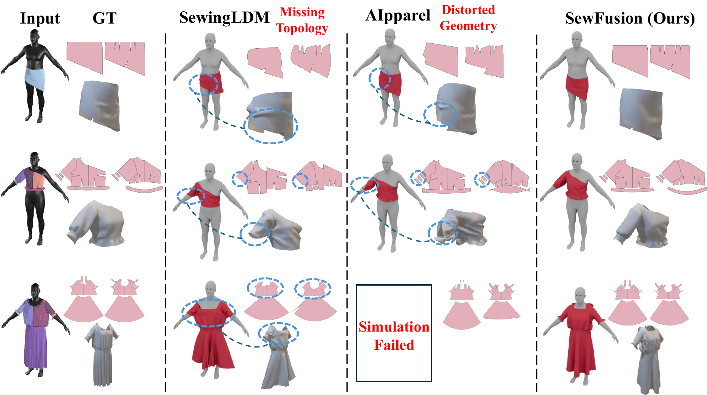
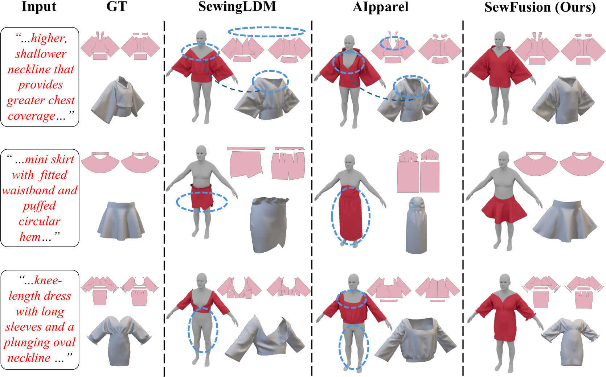
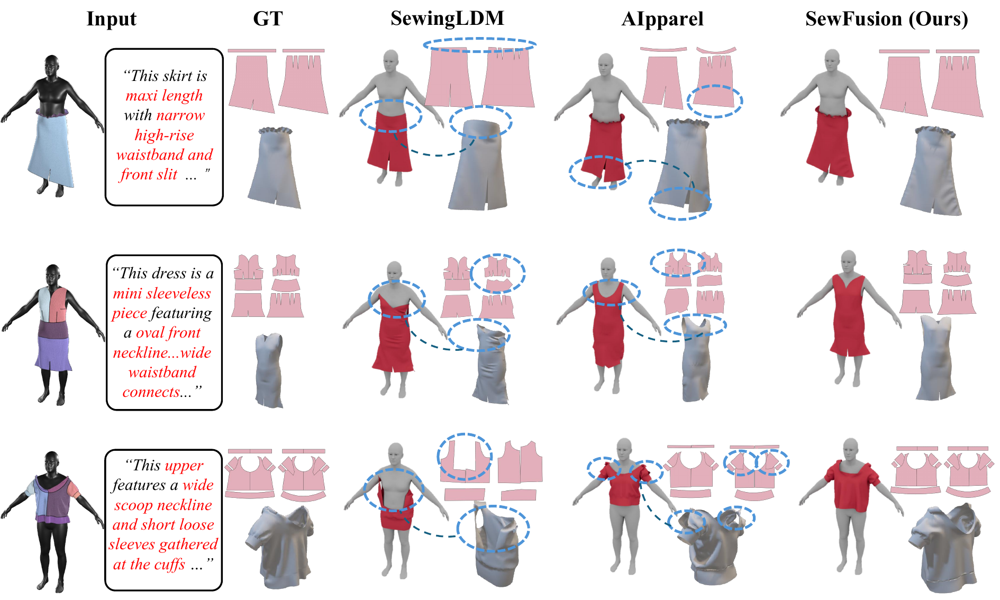
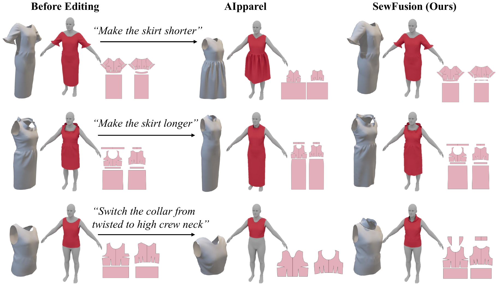

SewFusion: Tailored Generation of Topology and Panel-Level Geometry for Sewing Patterns
1Shenzhen University 2Zhejiang University
Abstract
Generating sewing patterns from images and text requires modeling a heterogeneous representation composed of discrete topology and continuous geometry. Existing diffusion-based methods enable holistic geometry generation by converting the entire pattern into a continuous representation, but weaken discrete topology modeling. Autoregressive methods preserve discrete topology through next-token prediction, but tie continuous geometry regression to token-level hidden states with limited panel-level context. We propose SewFusion, a unified autoregressive framework that adopts tailored generation mechanisms for discrete topology and panel-level continuous geometry, using next-token prediction for the former and flow matching for the latter. A Panel Geometry VAE learns a fixed-size latent space for variable-length panel geometry, while Panel-Forcing reduces the training-inference mismatch and improves robustness to topology prediction errors. Experiments on SewFactory and GCD-MM demonstrate consistent improvements across image-, text-, and image-text-based generation, as well as sewing pattern editing.
Method
SewFusion first generates the discrete topology of a sewing pattern through next-token prediction. Conditioned on the multimodal input and generated topology, Panel Geometry Flow then produces panel-level continuous geometry in the latent space learned by the Panel Geometry VAE.

Video Results
Each video compares four garments. From left to right: GT, SewFusion (Ours), SewingLDM, and AIpparel.
Results
Image-based Generation

Text-based Generation

Image-Text-based Generation

Sewing Pattern Editing

BibTeX
@article{lin2027sewfusion,
title = {SewFusion: Tailored Generation of Topology and Panel-Level Geometry for Sewing Patterns},
author = {Lin, Jiaxin and Pan, Xiao and Yuan, Hangjie and Liang, Luyan and Li, Wan and Feng, Daquan},
year = {2027}
}